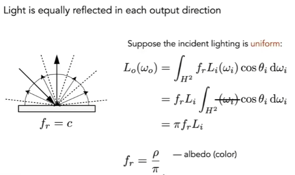
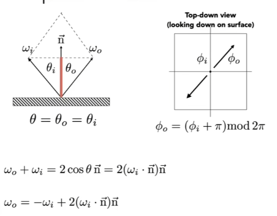
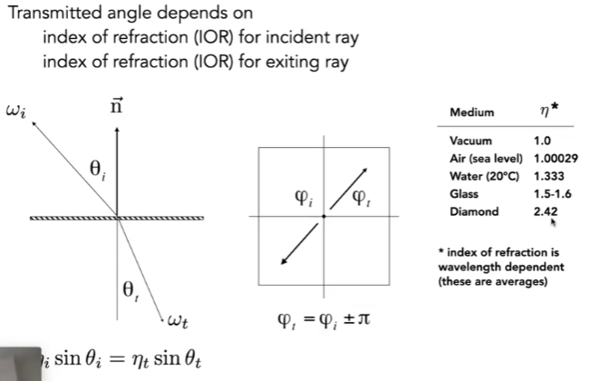
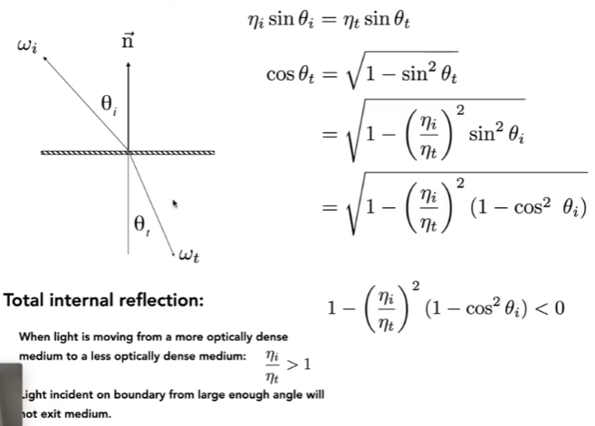
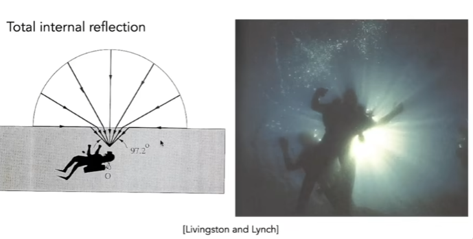
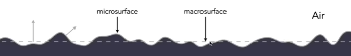
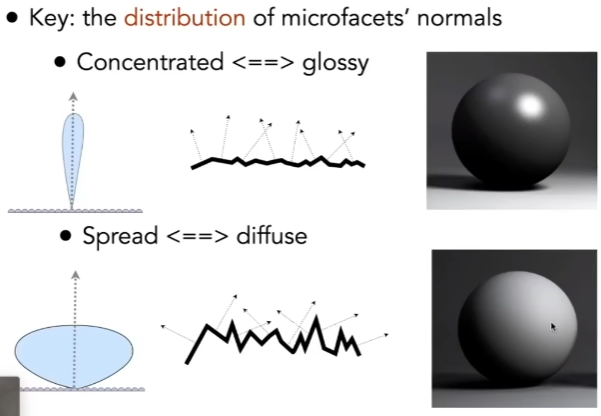
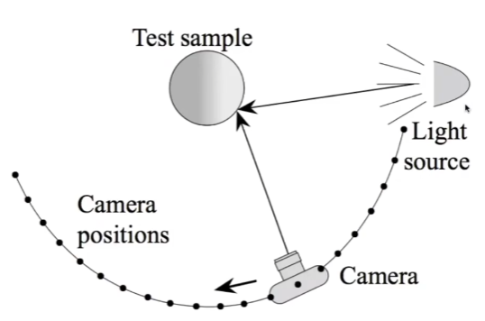

GAMES 101 L17-Materials and Appearances (材质与外观)
Diffuse / Lambertian Material
Assume that diffuse materials will not emit light itself but can reflect all incident light (入射光). Based on the law of conservation of energy, the reflected irradiance should be equal to the incident irradiance. Also suppose the incident light and reflected light is uniform. Then we can write the rendering function as in the figure. fr is a constant representing BRDF, and Li is also a constant. Therefore, the result of the integratation is . Lo == Li because of the law of conservation of energy, so (assume no light absorbed). And here we can add a albedo (反射率). Albedo can be single-channel or three-channel, ranging from 0 to 1. And so fr is in .

Perfect Specular Reflection
- 方位角

Snell’s Law (for refraction 折射)
- 折射率
 (BTDF, T for Transmittance 折射; BSDF, S for Scattering 散射(generally including reflection and transmittance))
Based on snell’s law, we can calculate (折射角的余弦)。Then we got the law of refraction based on the this equation - if we cannot find a reasonable solution to this equation, i.e., the part under the sqrt is negative, then there won’t exist transmittance. And since will always be positive, if and is large enough, there will be no transmittance (全反射现象).

Fun: Snell Window / Circle: Only can see a cone under water surface

Fresnel Reflection Term (菲涅耳项)
Reflectance depends on incident angle (and polarization of light)
For example, reflectance increases with grazing angle.
Use Schlick’s approximation to approximate (avoid complex calculations):
( - 折射率)
Microfacet Materials
Theory:
- Rough surface (远处看是材质，近处看是几何)
- Macroscale: flat & rough
- Microscale: bumpy & specular
- Individual elements of surface act like mirrors
- Known as Microfacets
- Each microfacet has its own normal 法线

Microfacet BRDF
As shown in the figure, the distribution of microfacets’ normals affects how the materials look.

What kind of microfacets reflect wi to wo? Since we consider microfacet as mirrors, only when its normal coincides with the half vector h, it will reflect wi to wo. Thus, D(h) describes how many normals coincide with the half vector. The shadowing-masking term describes the phenomenon that microfacets obstruct each other, causing some microfacets to be unable to receive light / certain micro-surfaces to be invisible from some angles. This self-shadowing phenomenon is likely to occur when the angle of incidence light is close to the grazing angle (the direction of light is almost parallel to the surface).

Isotropic / Anisotropic Materials(BRDFs) (各向同性 / 各向异性材料)
Tell whether the material is isotropic or anisotropic by the directionality of underlying microfacets.
Anisotropic BRDF
Reflection depends on azimuthal angle (方位角) .
If the BRDF (think of we look at a rotated ‘V’ from the above, and the relative angle between incident light and reflected light changes), then it’s anisotropic.
Properties of BRDF
- Non-negativity: . fr represents energy distribution, so it cannot be negative.
- Linearity: . Recall the Blinn-Phong model, we divide lighting into three types: specular highlights, diffuse reflection, and ambient lighting (环境光照). This means that we can divide BRDF into multiple parts and add them up to get a final result.
- Reciprocity principle (可逆性):
- Energy conservation:
- Isotropic vs. Anisotropic:
- if isotropic, we can convert 4d BRDF to 3d BRDF:
- Then from reprocity,
Measuring BRDF
Motivation of Measuring BRDF
- Avoid need to develop / derive models
- Automatically includes all of the scattering effects present
- Can accurately render with real-world materials
- Useful for product design, special effects, …
Approaches

General approach:
1 | |
Improving efficiency:
- Isotropic surfaces reduce dimensionality from 4D to 3D
- Reciprocity reduces # of measurements by half
- Clever optical systems…
Challenges
- Accurate measurements at grazing angles
- Important due to Fresnel effects
- Measuring with dense enough sampling to capture high frequency specularities
- Retro-reflection
- Spatially-varying reflectance.
Representing Measured BRDF
Desirable qualities
- Compact representation
- Accurate representation of measured data
- Efficient evaluation for arbitrary pairs of directions
- Good distributions available for importance sampling